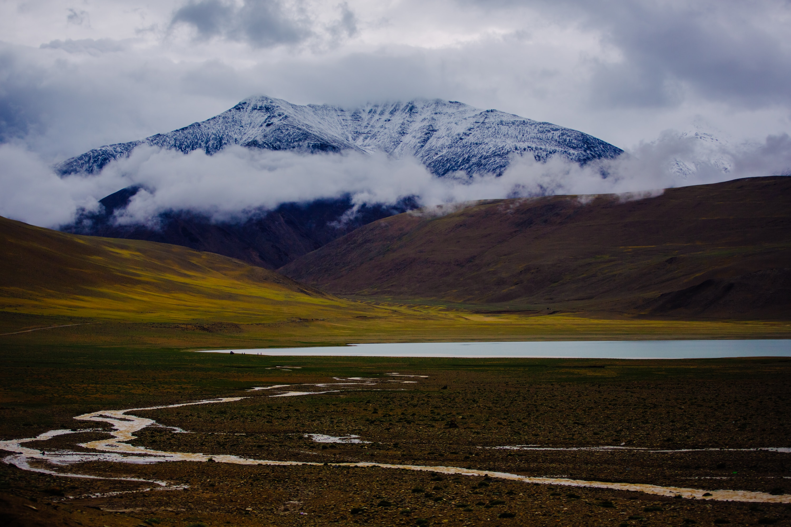

Political History of Kashmir
Islamic Fundamentalism, Ethnic Cleansing, Legal Documents
Islamic Fundamentalism, Ethnic Cleansing, Legal Documents
Cultural heritage of Kashmir is as multi-dimensional as the variegated backdrop of its physical exuberance which has nursed and inspired it all along. Its sanctity and evergreen stature can be conveniently inferred from the chaste shimmering snow, with its virgin demeanor from top to toe, adorning the towering peaks of its mountainous periphery. Mellowing kisses of the sun endow these summits with a rosy blush lending perennial health to our warbling brooks, roaring waterfalls and sedate and solemn lakes. To crown all, this very nectarine glow has most meaningfully groomed our mental attitude to glean unity amidst seeming diversity.
Culture is always in a flux and ferment. It is a non-stop mental journey with no mile-posts to cool its heels upon. It is, precisely speaking, the cumulative expression of the values enshrined in the heart-beats of the denizens of this Happy Valley. The irresistible stamp of Buddhist compassion, Hindu tolerance and Muslim Zest for life is most unmistakably discernible from the attainments of Kashmiri mind and intellect.
In the foregoing web pages, we have made a humble attempt to portray this very salient trait of our culture. - by Professor K. N. Dhar Text reproduced from Glimpses of Kashmiri Culture

Kashmiri Pandit ArtistesProminent Kashmiri Pandit Artistes. (Click to know more.) |

Kashmiri Pandit PlaywrightsProminent Kashmiri Pandit playwrights. (Click to know more.) |
Assorted Collection of PaintingsBansi Parimoo, G R Santosh, Ashutosh Sapru, Sant Ji Sultan, Bushan Kaul, Rajinder Tiku, P N Kachru, Geeta Das, Maheshwar Nath Dhar, and others.(Click to know more.) |
Lal DedIn Kashmir, some people consider her a poet, some consider her a holywoman and some consider her a sufi, a yogi, or a devotee of Shiva. Some even consider her an avtar. (Click to know more.) |
Faces of GloryProminent Kashmiri Pandit Personalities of yester-years. (Click to know more.) |
Cuisine of KashmirA Cookbook of All Popular Kashmiri Dishes along with a Guide to Healthy Eating. (Click to know more.) |
Books on CultureThe extremely awful and shocking experience of Kashmiri Pandits has given birth to a different kind of authors and analysts. Their books, some of them already published, is the result of their firsthand experience, as well as their revised opinions and rethinking on many vital subjects that deeply concern and influence our contemporary life. (Click to know more.) |
Folk Tales from KashmirNINE hundred years ago a remarkable collection of stories called Kathasaritsagara, the ''Ocean of Stories", was produced in Kashmir. Somadeva, its author, is said to have included in this tome many stories which he had heard from others and which, in fact, had their origin in folk-literature. (Click to know more.) |